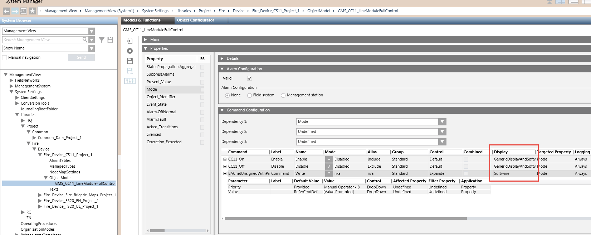

Enabling/Disabling CC11 Detection Lines
Due to potential risks of misuse, the command to disable fire detection lines from Desigo CC is not available by default. Management station operators can only enable detection lines. You can however modify the system library to make the Disable command visible. Upon selecting a detention line in System Browser, the Disable command will be available in the Extended Operation tab along with the Enable command.
In the same way, the Disable command is not available from standard programmatic interfaces such as scripts and OPC. Follow these instructions to make the command available.
- You are authorized and trained to customize the system libraries for a specific level (Country, Region, or Project).
NOTE: The customization level is set on the System Settings node from the Extended Operation tab. - System Manager is in Engineering mode.
- In System Browser, select Management View.
- In Field Networks, select and expand the CC11 Physical structure, and select a fire detection line, called for example Interactive Line.
- In the Object Configurator tab, check the Object model setting, which can be either of the following:
- GMS_CC11_LineModule. This is the (Desigo CC V4.0 or earlier) object model that does now support the required customization.
In this case, you need to reimport the CC11 configuration data and start again this procedure.
Depending on your CS11 architecture, refer to Import CS11 Configuration File or to Import CS11 Configuration File in Cerloop. - GMS_CC11_LineModuleFullControl. This is the (Desigo CC V4.1 or later) object model that supports the required customization.
- Double-click the Object model field label to select the object model in the CC11 library.
- Click Customize
 , and then click OK.
, and then click OK. - The customized folder is selected in System Settings > Libraries > L-customization level > Fire > Device > CS11 > ObjectModel
- Select the customized node GMS_CC11_LineModuleFullControl.
- In the Models & Functions tab, in the Properties expander, select Mode.
- On the right-hand side, expand the Command Configuration expander.
- In the Label column, select the Disable command. You can modify the following settings:
- In the Display column, modify Reserved to one of the following:
- Software (to permit the programmatic command)
- GenericDisplay (to permit the manual command from the user interface)
- GenericDisplayAndSoftware (to permit both types of commands). - In the Label column, select the Command (Write) command, and then, in the Display column, modify Reserved to Software (to permit the programmatic command to enable and disable the detection line).
- Click Save
 .
.
